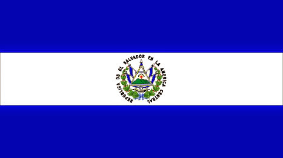

About Me
My name is Nefi and I am a Software Developer student. I am Salvadorean and currently I work as Workforce Analyst in Workforce Department. My biggest treasures are my family and the Gospel. I love to travel abroad and learn new things.

El Salvador, Central America
El Salvador is the smallest country in the Americas, famous for its beautiful beaches and excellent surfing waves. It boasts a diverse array of delicious traditional foods, with "pupusas" being the most well-known. Despite its small size, El Salvador offers numerous tourist attractions, allowing visitors to enjoy many activities in just one day.
 Official flag of El Salvador